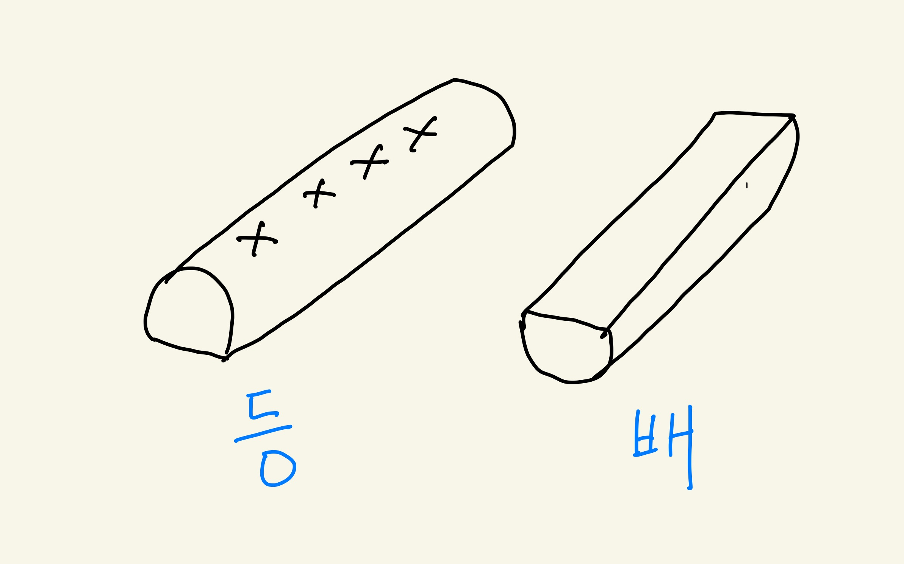

5.5. 함수¶
우리는 지금까지 파이썬 프로그램을 배우면서 메소드(method) 또는 함수(function) 이라는 용어를 사용하였다. 사실 프로그램 언어에서 메소드와 함수는 동일한 의미를 가진다.
이제 메소드와 함수에 대하여 좀 더 자세하게 알아보자. 일단 함수라는 단어는 자주 들어보았고 더 쉬운 것 같으니 먼저 함수를 생각해보자.
# 필요한 라이브러리 불러오기
import pandas as pd
import numpy as np
import scipy.stats as stats
from itertools import product
import matplotlib.pyplot as plt
%matplotlib inline
5.5.1. 함수의 기초 사용법¶
여러분들은 함수(function)라는 단어를 어디선가 본 적이 있을 것이다. 대부분 수학 교과서에서 함수를 다음과 같이 나타내는 것을 기억할 것이다.
위의 식에서 \(x\) 와 \(y\) 의 값이 주어지면 함수 \(f\)는 \(x,y\)를 이용하여 주어진 작업을 수행하고 마지막으로 결과 \(z\)를 구해준다는 의미이다. 함수에 주어지는 입력값 \(x\), \(y\) 를 인자(arguement) 라고 한다.
5.5.1.1. 수학 함수¶
수학에 관련된 디양한 수학 함수는 numpy 라이브러리에 정의되어 있다. 여러분이 사용하고자 하는 수학 함수의 대부분은 numpy 라이브러리의 매뉴얼에서 찾을 수 있다.
np.sqrt(2)
1.4142135623730951
np.log(10)
2.302585092994046
np.sin(3)
0.1411200080598672
5.5.1.2. 인자의 개수¶
자료를 생성하거나, 요역하거나 또는 변형하는 기본적인 유용한 함수들도 미리 정의되어 있다.
먼저 numpy 라이브러리에 벡터를 생성하는 함수 arange()를 보자. 함수 arange()는 다음과 같이 3개의 인자를 가질 수 있으며 괄호 (...) 안에 주어진 값은 차례대로 대응하는 인자에 연결된다. 함수의 자세한 사용법은 라이브러리의 매뉴얼을 참조해야 한다.
numpy.arange([start, ] stop, [step, ])
인자들 중에 [] 로 묶여저 있는 것들은 선택적으로 사용할 수 있는 인자들이다. 따라서 함수 np.arange() 는 다음과 같이 주어진 목적에 따라 3개의 인자들을 선택적으로 사용할 수 있다.
np.arange(10) # 하나의 인자인 경우 numpy.arange(stop) - 0 부터 stop-1 까지 1씩 증가하는 벡터
array([0, 1, 2, 3, 4, 5, 6, 7, 8, 9])
np.arange(5,10) # 두 개의 인자인 경우 numpy.arange(start, stop) - start 부터 stop-1 까지 1씩 증가하는 벡터
array([5, 6, 7, 8, 9])
np.arange(10,20,0.5) # 세 개의 인자인 경우 numpy.arange(start, stop, step) - start 부터 stop-1 까지 step 씩 증가하는 벡터
array([10. , 10.5, 11. , 11.5, 12. , 12.5, 13. , 13.5, 14. , 14.5, 15. ,
15.5, 16. , 16.5, 17. , 17.5, 18. , 18.5, 19. , 19.5])
5.5.1.3. 함수와 라이브러리¶
이제 다음과 같은 자료를 요약할 수 있는 중요한 함수 몇 가지의 예를 들어 보자.
max 와 sum과 같은 함수는 파이썬 자체와 numpy에 모두 정의되어 있지만, 함수mean 은 파이썬 자체에 정의되어 있지 않다.
max(x):x의 원소들의 최대값을 구하는 함수 (np.max와 동일한 기능)sum(x):x의 원소들의 합을 구하는 함수 (np.sum와 동일한 기능)np.mean(x):x의 원소들의 평균을 구하는 함수np.cumsum(x):x의 원소들의 누적합(cumulative sum)을 구하는 함수
위에서 np.cumsum(x) 의 결과는 벡터인 것에 유의하자. 즉 함수의 결과값은 하나의 숫자일 수 있고, 벡터, 행렬, 리스트 등 파이썬에서 사용하는 다양한 자료의 형식으로 나타날 수 있다.
a=np.arange(10)
max(a), np.max(a)
(9, 9)
sum(a), np.sum(a)
(45, 45)
np.mean(a)
4.5
np.cumsum(a)
array([ 0, 1, 3, 6, 10, 15, 21, 28, 36, 45])
5.5.1.4. 인자의 종류¶
여러분이 지금까지 배운 함수 중에 가장 복잡한 형태의 함수는 외부화일에서 자료를 읽어서 데이터프레임을 만드는 함수이다. 외부화일에서 자료를 읽어서 데이터프레임을 만드는 함수는 라이브러리 pandas 에 정의된 함수read_csv() 이다.
df = pd.read_csv("data.csv", sep=',', encoding = 'utf-8-sig')
함수read_csv()는 여러 개의 인자(arguement)를 있는데 첫 번째 인자인 화일 이름 "data.txt은 디폴트(default) 인자 로서 인자의 값만 써주면 된다.
이후에 나오는 인자들은 키워드(keyword) 인자 로서 주어진 키워드를 쓰고 그 값을 =으로 지정해 주어야 한다.
5.5.2. 사용자 함수¶
이제 사용자가 필요한 함수를 만드는 방법에 대하여 배워 보자.
먼저 앞에서 배운 반복문과 조건문을 이용하여 주어진 숫자 벡터 또는 리스트에 있는 양수들의 합 을 구하는 코드를 생각해 보자.
my_numbers = np.arange(-10,10)
my_sum = 0
for value in my_numbers :
if value > 0 :
my_sum = my_sum + value
my_sum
45
만약에 다른 숫자 벡터에 대한 양수들의 합을 구하고 싶다면 위의 코드를 조금만 바꾸어 쓰면 된다.
your_numbers = np.arange(-20,30)
your_sum = 0
for value in your_numbers :
if value > 0 :
your_sum = your_sum + value
your_sum
435
5.5.2.1. 사용자 함수의 정의¶
위와 같이 적용되는 대상만 바뀌면서 수행하는 작업이 동일한 경우 사용자는 일련의 동일한 작업을 수행하는 자신 만의 함수(user defined function)를 정의할 수 있다. 사용자는 동일한 작업을 반복하는 경우 자신 만의 함수를 정의하여 유용하고 효율적으로 사용할 수 있다. 만약 주어진 모든 수를 더하는 함수 sum() 이 미리 정의되어 있지 않은 경우를 상상해 보라!
사용자 함수는 다음과 같이 정의한다.
def function_name(x, y, z, ...):
...
...
...
return ...
위의 함수를 정의하는 코드의 구성 요소를 설명해 보자.
def: 함수가 정의되는 문장임을 알리는 예약어 (define의 준말)function_name: 사용자가 결정하는 함수의 이름(x, y, x...) :: 함수 안에서 사용할 인자의 이름을 정하고 마지막 괄호 뒤에는 꼭:으로 끝나야 한다......: 함수의 작업을 수행하는 코드들 (꼭 들여쓰기를 맞추어야 한다)return ...: 함수의 마지막 결과로서...를 출력한다. 출력하는 값의 개수는 2개 이상도 가능하며 컴마로 구분한다.retrun은 예약어이다.
함수를 정의할 때 함수의 이름과 인자를 정의하는 부분 function_name(x, y, z, ...) 을 함수의 서명(signature) 라고 부른다. 또한 함수의 서명 뒤에 나오는 일련의 코드들을 함수의 몸통(body)이라고 부른다.
5.5.2.2. 사용자 함수: 예제¶
먼저 아주 간단한 함수의 예를 들어보자.
음수의 값을 양수로 바꾸어 주는 함수 minus2plus(x) 를 다음과 같이 정의해 보자.
인자 x 를 입력해서 0보다 작으면 res 값을 -x 로 지정하고 아니면 x 로 지정한다. 마지막으로 res 의 값을 출력한다.
def minus2plus(x) :
if x < 0:
res = -x
else :
res = x
return res
이제 인자를 바꾸어 가면서 출력된 값이 어떻게 나오는지 살펴 보자.
minus2plus(-2)
2
minus2plus(4.0)
4.0
minus2plus(0.0)
0.0
만약 문자열로 인자로 주면 어떤 일이 일어날까?
오류가 발생한다! 그 이유는 함수 안에서 문자와 0을 비교하는 코드 value < 0 을 수행할 수 없기 때문이다.
따라서 사용자가 함수를 정의한 후 사용할 경우, 입력할 객체를 함수에서 정의한 인자의 형식과 구조에 맞게 선택해 주어야 한다.
즉, 함수 minus2plus 의 인자 x 는 숫자로 주어져야 한다.
minus2plus("A")
---------------------------------------------------------------------------
TypeError Traceback (most recent call last)
<ipython-input-22-6ce9a634737f> in <module>()
----> 1 minus2plus("A")
<ipython-input-18-1ca3f8401473> in minus2plus(x)
1 def minus2plus(x) :
----> 2 if x < 0:
3 res = -x
4 else :
5 res = x
TypeError: '<' not supported between instances of 'str' and 'int'
이제 하나의 값이 아닌 여러 개의 값을 가진 리스트나 벡터를 인자로 하는 함수를 예를 들어 보자.
앞에서 본 사례에서 본 문제를 함수로 해결해 보자. 숫자로 구성된 벡터나 리스트에서 양수들만의 합을 구하는 함수를 sum_positive 란 이름으로 정의해 보자.
def sum_positive(x) :
sum_plus = 0
for value in x :
if value > 0 :
sum_plus = sum_plus + value
return sum_plus
이제 벡터마다 양수들만의 합을 구하려면 긴 코드를 반복해서 쓰지 않고 함수 sum_positive를 사용하면 된다.
sum_positive(my_numbers)
45
your_sum = sum_positive(your_numbers) # 함수의 결과를 새로운 변수에 저장
your_sum
435
이제 조금 더 복잡한 함수를 정의해 보자. 문자로 구성된 리스트(벡터)에 주어진 문자열이 포함된 원소가 몇 개가 있는지 세어주는 함수 count_char를 정의해 보자.
이 경우 문자 벡터와 찾고자 하는 문자열, 즉 2개의 인자를 가진 함수를 정의해야 한다. 아래 함수에서 두 개의 in 이 니타나는데 각각 기능이 다르다.
for value in x: 루프(loop)를 수행할 때 사용되는 반복 객체 앞에 나타나는 예약어inif c in value: 문자열c가 문자열value안에 있는지 점검해주는 예약어in
def count_char(x, c) :
count = 0
for value in x :
if c in value :
count = count + 1
return count
이제 학생의 이름이 나열된 리스트에서 이름이 용희인 학생이 몇 명인지 알아보자.
student_names = ['김철수', '이용희', '손흥민', '방탄소년', '김용희', '박서준', '김지원']
count_char(student_names, "용희")
2
또한 윷놀이를 하는 경우 4개의 윷이 던져진 결과에서 등 의 개수를 세어주는 작업을 수행해 보자.
yoot_draw = ['등', '등', '배', '등']
count_char(yoot_draw, "등")
3
5.5.3. 함수와 메소드¶
또한 우리는 데이터프레임에서 자료를 요약하는 몇 가지 함수를 이용해 보았다. 데이터프레임에서 함수를 메소드라고 불렀다. 데이터프레임에서 함수를 메소드(method, 방법)라고 부른 이유는 함수가 데이터프레임에 적용되는 방법 이 미리 정의되어 있어서 컴마로 연결하여 연쇄적으로 사용할 수 있기 때문이다.
메소드는 주어진 객체(object)뒤에 컴마로 연결된 함수(function)를 뜻한다.
object.function(....)
예를 들어 함수 append(x)는 주어진 리스트의 마지막에 x 를 붙여주는 메소드이다. 따라서 list.append(x) 의 형태로 사용된다.
x = [1,2,3,4]
x.append(5)
x
[1, 2, 3, 4, 5]
x.append(100)
x
[1, 2, 3, 4, 5, 100]
또한 데이터프레임에 적용되는 sum() 함수는 인자를 지정하지 않으면 디폴트로 열의 합을 구해주는 메소드이다.
형식은 dataframe.sum() 이다.
df = pd.DataFrame({'x': [-10,2,5,-4], 'y': [1, 2, -3, 2]})
df
| x | y | |
|---|---|---|
| 0 | -10 | 1 |
| 1 | 2 | 2 |
| 2 | 5 | -3 |
| 3 | -4 | 2 |
df.sum()
x -7
y 2
dtype: int64
만약 인자 axis=1 로 주면 각 행의 합계를 구해준다.
df.sum(axis=1)
0 -9
1 4
2 2
3 -2
dtype: int64
5.5.4. 데이터프레임과 함수¶
우리는 데이터프레임에서 자료를 요약하는 몇 가지 함수(메소드)를 이용해 보았다. 이제 사용자가 정의한 함수를 데이터프레임에서 메소드처럼 적용하는 방법을 배워보자.
5.5.4.1. 모든 셀에 적용¶
데이터 프레임의 모든 값들 중 음수를 양수로 바꾸고 싶다면 위에서 정의된 함수 minus2plus 를 모든 셀에 적용해야 한다.
사용자 정의 함수는 데이터 프레임에 메소드로 적용하려면 applymap(function) 메소드를 다음과 같이 적용한다. 말 그대로 주어진 함수 function 을 모든 셀에 적용(applymap) 하라는 의미이다.
dataframe.applymap(function)
df.applymap(minus2plus)
| x | y | |
|---|---|---|
| 0 | 10 | 1 |
| 1 | 2 | 2 |
| 2 | 5 | 3 |
| 3 | 4 | 2 |
5.5.4.2. 열과 행의 요약¶
데이터프레임의 각 열 또는 행에 우리가 만든 양수들만의 합을 구하는 함수 sum_positive()를 다른 메소드처럼 적용할 수 있을까?
먼저 함수 sum_positive() 는 사용자 정의 함수이기 때문에 데이터 프레임에 미리 정의된 다른 메소드(예를 들어 sum)과는 적용하는 방법이 다르다. 사용자 정의 함수를 열과 행의 메소드로 적용하려면 apply(function, axis=0) 메소드를 다음과 같이 적용한다. 말 그대로 주어진 함수 function 를 각 열에 적용(apply) 하라는 의미이다.
앞에서 모든 셀에 적용할 때 사용한 applymap과 다른 apply 를 사용하는 것에 주의하자.
df.apply(sum_positive, axis=0) # axis = 0 은 함수를 각 열에 대하여 적용
x 7
y 5
dtype: int64
함수를 데이터프레임의 각 행에 대하여 적용 하는 경우 apply(function, axis=1) 메소드를 적용한다.
df.apply(sum_positive, axis=1) # axis = 1 은 함수를 각 행에 대하여 적용
0 1
1 4
2 5
3 2
dtype: int64
5.5.4.3. 2개 이상의 인자¶
만약 함수의 인자가 2개 이상일 경우, 데이터프레임의 열 또는 행으로 지정되는 인자를 제외하고 함수의 서명에서 정의된 다른 인자들의 이름에 = 로 값을 다음과 같이 지정해 준다.
def function(x,y,z):
....
....
return ...
dataframe.apply(function, x=2, z="a", axis=1)
예를 들어 위에서 정의한 함수 count_char(x,c) 를 데이터프레임에 적용하는 방법은 다음과 같다.
인자 x 는 데이터프레임의 행 또는 열이 되므로 따로 지정하지 않아도 된다. 찾고자 하는 문자열을 입력해주는 나머지 인자 c 는 함수 이름 뒤에 c='용희' 의 형태로 지정해 준다.
df2 = pd.DataFrame({ 'name': student_names})
df2
| name | |
|---|---|
| 0 | 김철수 |
| 1 | 이용희 |
| 2 | 손흥민 |
| 3 | 방탄소년 |
| 4 | 김용희 |
| 5 | 박서준 |
| 6 | 김지원 |
df2.apply(count_char, c="용희", axis=0)
name 2
dtype: int64
df2.apply(count_char, c="김", axis=0)
name 3
dtype: int64
5.5.5. 함수의 데이터 취급¶
우리는 다양한 데이터(리스트, 데이처프레임….)를 변수에 지정하여 사용하는 법을 배웠다.
variable_name = data
정의된 함수도 데이터처럼 취급하여 다른 이름을 가진 함수로 지정할 수 있다. 즉 함수도 하나의 데이터처럼 취급할 수 있는 것이다.
예를 들어 위에서 정의한 함수 minus2plus 를 다른 이름 another_function 으로 지정해 보자. 지정된 함수 another_function 은 이미 정의한 함수 minus2plus와 똑같은 기능을 가진다.
another_function = minus2plus
another_function(-20)
20
another_function(30)
30
함수를 데이터와 유사하게 취급할 수 있기 때문에 다른 함수의 인자로서 사용될 수 있다.
예를 회사에서 보너스를 주는 규칙을 함수로 만들었다고 하자. 연봉이 3000만원 이하면 연봉의 20%, 3000만원 초과면 15%를 보너스로 준다.
def bonus_amount(salary):
if salary <= 3000 :
bonus = salary * 0.2
else :
bonus = salary * 0.15
return bonus
bonus_amount(2000)
400.0
bonus_amount(4000)
600.0
이제 직원 1명을 고용해서 드는 총비용이 연봉(salary), 보험료(insurance), 야근 수당(night), 보너스를 합친 액수라고 하자. 이러한 총비용을 계산하는 함수 total_expense 를 다음과 같이 정의하자. 함수 total_expense 의 마지막 인자는 보너스를 계산하는 함수 이름이다.
def total_expense(salary, insurance, night, bonus_function) :
expense = salary + insurance + night + bonus_function(salary)
return expense
total_expense(4000, 200, 100, bonus_amount)
4900.0
만약 보너스 지급에 대한 규칙이 바뀌면 보너스를 계산하는 함수 bonus_amount 만 바꾸면 된다.
예를 들어 이번 해는 경영 성과가 너무 좋아서 모든 직원에게 1000만원 특별 보너스를 지급하려고 한다. 새로운 함수 bonus_amount_special 를 만들고 총비융을 계산하는 함수에 인자로 보내주면 된다.
def bonus_amount_special(salary):
if salary <= 3000 :
bonus = salary * 0.2
else :
bonus = salary * 0.15
bonus = bonus + 1000
return bonus
total_expense(4000, 200, 100, bonus_amount_special)
5900.0
5.5.6. 요약¶
사용자 함수는 다음과 같이 정의한다.
def function_name(x, y, z, ...):
...
...
...
return ...
위의 함수를 정의하는 코드의 구성 요소를 설명해 보자.
def: 함수가 정의되는 문장임을 알리는 예약어 (define의 준말)function_name: 사용자가 결정하는 함수의 이름(x, y, x...) :: 함수 안에서 사용할 인자의 이름을 정하고 마지막 괄호 뒤에는 꼭:으로 끝나야 한다......: 함수의 작업을 수행하는 코드들 (꼭 들여쓰기를 맞추어야 한다)return ...: 함수의 마지막 결과로서...를 출력한다. 출력하는 값의 개수는 2개 이상도 가능하며 컴마로 구분한다.retrun은 예약어이다.
함수를 정의할 때 함수의 이름과 인자를 정의하는 부분 function_name(x, y, z, ...) 을 함수의 서명(signature) 라고 부른다. 또한 함수의 서명 뒤에 나오는 일련의 코드들을 함수의 몸통(body)이라고 부른다.
사용자 함수를 데이터프레임에 적용하는 세 가지 방법을 요약하면 다음과 같다.
데이터프레임의 모든 셀에 함수를 적용:
dataframe.applymap(function)
데이터프레임의 각 열에 요약 함수를 적용:
dataframe.apply(function, axis=0)
데이터프레임의 각 행에 요약 함수를 적용:
dataframe.apply(function, axis=1)
5.5.7. 예제: 윷놀이의 확률¶
앞 절에서 확률의 기초에 대하여 알아볼 때 윷놀이의 확률에 대하여 언급하였다.
윷 하나를 던질 때 ‘등’ 과 ‘배’ 가 나올 확률이 다를 것이라고 모두 예상을 하지만 확률이 정확하게 얼마인지 논리적으로 추론하기는 쉽지 않다.

만약 ‘배’가 나올 확률이 0.6 이고 ‘등’ 이 나올 확률이 0.4 이라면 4개의 윷을 던지는 경우 도, 개, 걸, 윷, 모에 대한 확률은 얼마일까?
백도(빽도)와 낙은 가능한 결과에서 일단 제외하자.
먼저 앞에서 배운 확률의 계산 규칙을 이용하여 직접 계산해 보자. 4개의 윷을 던지는 경우 4개의 윷은 서로 독립적으로 결과가 나타나가 떄문에 표본공간은 다음과 같다.
yoot = ["등", '배']
sample_space = list(product(yoot, repeat= 4))
sample_space
[('등', '등', '등', '등'),
('등', '등', '등', '배'),
('등', '등', '배', '등'),
('등', '등', '배', '배'),
('등', '배', '등', '등'),
('등', '배', '등', '배'),
('등', '배', '배', '등'),
('등', '배', '배', '배'),
('배', '등', '등', '등'),
('배', '등', '등', '배'),
('배', '등', '배', '등'),
('배', '등', '배', '배'),
('배', '배', '등', '등'),
('배', '배', '등', '배'),
('배', '배', '배', '등'),
('배', '배', '배', '배')]
4개의 윷을 던질 경우 결과는 ‘도’, ‘개’, ‘걸’, ‘윷’, ‘모’ 이다. 각 결과의 확률은 다음과 같이 배반 사건과 독립 시행의 확률 계산 규칙에 따라서 계산할 수 있다.
예를 들어 표본공간에서 ‘개’가 나오는 경우의 수는 \({{4}\choose{2}} = 6\) 이고 각 경우의 확률은 \((0.6)\times (0.6)\times (0.4)\times (0.4)\)이므로 아래와 같이 계산된다.
‘도’가 나올 확률: 배가 1 번 나온 사건의 확률: \( (4) \times (0.6)\times (0.4)\times (0.4)\times (0.4) = 0.1536\)
‘개’가 나올 확률: 배가 2 번 나온 사건의 확률: \( (6)\times (0.6)\times (0.6)\times (0.4)\times (0.4) = 0.3456\)
‘걸’이 나올 확률: 배가 3 번 나온 사건의 확률: \( (4)\times (0.6)\times (0.6)\times (0.6)\times (0.4) = 0.3456\)
‘윷’가 나올 확률: 배가 4 번 나온 사건의 확률: \( (1)\times (0.6)\times (0.6)\times (0.6)\times (0.6) =0.1296\)
‘모’가 나올 확률: 등이 4 번 나온 사건의 확률: \( (1)\times (0.4)\times (0.4)\times (0.4)\times (0.4) =0.0256 \)
이런 계산은 ‘등’이 나올 확률과 ‘배’가 나올 확률이 다르게 주어진다면 다시 손으로 계산하기 너무 번거롭다.
일반적으로 ‘배’가 나올 확률이 \(p\) 이고 ‘등’이 나올 확률이 \(1-p\), 라고 주어졌을 때 4개의 윷을 던질 경우 결과에 대한 확률을 다음과 같이 함수 yoot_probability(p)를 만들어서 구해보자.
def yoot_probability(p):
q = 1-p
prob = np.repeat(0.0,5)
prob[0] = 4*p*q*q*q
prob[1] = 6*p*p*q*q
prob[2] = 4*p*p*p*q
prob[3] = p*p*p*p
prob[4] = q*q*q*q
df = pd.DataFrame({'outcome':[ '도', '개', '걸', '윷', '모' ], 'p':prob})
return df
yoot_probability(0.6)
| outcome | p | |
|---|---|---|
| 0 | 도 | 0.1536 |
| 1 | 개 | 0.3456 |
| 2 | 걸 | 0.3456 |
| 3 | 윷 | 0.1296 |
| 4 | 모 | 0.0256 |
‘배’가 나올 확률이 만약 0.55 라고 한다면 윷놀이의 확률은 아래과 같다.
‘배’가 나올 확률이 0.6 인 경우는 ‘개’와 ‘걸’ 이 나올 확률이 같았는데 0.55’로 작아지면 ‘개’의 확률이 ‘걸’의 확률보다 커지는 것을 알 수 있다.
이렇게 함수를 이용하면 반복되는 복잡한 계산을 편리하고 효율적으로 수행할 수 있다.
yoot_probability(0.55)
| outcome | p | |
|---|---|---|
| 0 | 도 | 0.200475 |
| 1 | 개 | 0.367538 |
| 2 | 걸 | 0.299475 |
| 3 | 윷 | 0.091506 |
| 4 | 모 | 0.041006 |
위에서 살펴본 윷놀이 게임에서 윷의 개수를 바꾸거나 규칙을 변경하면 확률을 계산하는 공식을 새로 만들고 그에 따라서 함수를 다시 만들어야 한다.
이제 윷놀이의 규칙을 정하는 함수를 만들고 이 함수를 다른 함수의 인자로 사용하는 함수를 생각해 보자.
아래는 4개의 윷을 던졌을 경우 ‘배’의 숫자에 따라서 ‘도’, ‘개’, ‘걸’, ‘윷’, ‘모’ 를 출력해주는 함수 yoot_rule_normal 이다.
함수의 서명(signiture) 바로 아래 나오는 큰 따옴표 3개로 묶인 문장들은 함수의 사용법에 대한 설명(documentation, manual,docstring)을 제공해 준다.
사용자가 정의한 함수의 설명은 물음표 뒤에 함수 이름을 쓰고 입력하면 볼 수 있다. 물론 이미 파이썬이나 다른 라이브러리에서 정의된 함수의 설명도 같은 방법으로 볼 수 있다
?function_name
def yoot_rule_normal(x):
""" 윷놀이의 규칙을 정하는 함수
윷을 던진 결과(예를 들어 ['배','배','등','등]) x 를 입력 받아서
'배' 의 숫자에 따른 규칙에 따라 결과를 출력해주는 함수
"""
count = 0
for out in x :
if out == "배" :
count = count + 1
if count == 1:
out = "도"
elif count == 2:
out = "개"
elif count == 3:
out = "걸"
elif count == 4:
out = "윷"
else :
out = "모"
return out
?yoot_rule_normal
yoot_rule_normal(['배','배','등','배'])
'걸'
yoot_rule_normal(['등','등','등','배'])
'도'
다음으로 함수 yoot_prob(x,p)는 2개 이상의 윷을 던져을 경우 나온 ‘배’와 ‘등’의 조합 x을 첫 번째 인자로 받는다. 예를 들어 4 개의 윷을 던지는 경우 x 의 값이 ['배','배','등','등] 가 될 수 있으며 2개의 윷을 던지는 경우 ['배','등'] 가 될 수 있다.
또한 하나의 윷을 던졌을 때 ‘배’가 나올 확률 p을 두 번째 인자로 받아서 확률을 계산해 주는 함수이다.
def yoot_prob(x, p):
"""윷놀이의 확률을 계산하는 함수
x: 윷을 던진 결과(예를 들어 ['배','배','등','등])
p: '배'가 나올 확률
"""
ans = 1.0
for out in x :
if out == "배" :
ans = ans*p
else :
ans = ans*(1-p)
return ans
yoot_prob(['배','배','등','배'], 0.6)
0.08639999999999999
yoot_prob(['배','등','배'], 0.55)
0.136125
yoot_prob(['배','등'], 0.5)
0.25
마지막으로 주어진 규칙을 따르는 윷놀이의 확률을 구해주는 함수 yoot_summary 는 다음과 같은 4개의 인자를 가진다.
yoot: 한 개 윷의 결과(예 [‘배’, ‘등’])num_of_yoot: 윷의 개수p_of_yoot: 한 개 윷을 던질 때 배가 나올 확률rule_function: 윷놀이 규칙을 정하는 함수
규칙이 달라지면 윷의 개수 num_of_yoot 과 윷놀이 규칙을 정하는 함수 rule_function 를 바꾸어 주면 된다. 함수는 다른 함수를 인자로 받을 수 있다.
또한 한 개 윷을 던질 때 배가 나올 확률도 바꾸어 계산할 수 있다.
# 윷놀이 확률 계산
def yoot_summary(yoot, num_of_yoot, p_of_yoot, rule_function):
"""윷놀이의 규칙에 따른 확률을 계산하는 함수
yoot: 한 개 윷의 결과(예 ['배', '등'])
num_of_yoot: 윷의 개수
p_of_yoot: 한 개 윷을 던질 때 배가 나올 확률
rule_function: 윷놀이 규칙을 정하는 함수
"""
outcomes = [] # 빈 리스트 생성
prob = []
results =[]
for out in product(yoot, repeat= num_of_yoot) :
outcomes.append(out)
prob.append(yoot_prob(out, p_of_yoot))
results.append(rule_function(out))
yoot_res = pd.DataFrame({'outcome': outcomes, 'result': results, 'p':prob})
final = yoot_res.groupby(by="result").sum().reset_index().sort_values(by='p')
return final
이제 우리가 평소에 윷놀이를 할 때 처럼 윷을 4번 던지며 ‘배’ 가 나올 확률이 각각 0.6, 0.55 인 경우 윷놀이의 확률을 알아보자.
yoot_summary(['등','배'], 4, 0.6, yoot_rule_normal)
| result | p | |
|---|---|---|
| 3 | 모 | 0.0256 |
| 4 | 윷 | 0.1296 |
| 2 | 도 | 0.1536 |
| 0 | 개 | 0.3456 |
| 1 | 걸 | 0.3456 |
yoot_summary(['등','배'], 4, 0.55, yoot_rule_normal)
| result | p | |
|---|---|---|
| 3 | 모 | 0.041006 |
| 4 | 윷 | 0.091506 |
| 2 | 도 | 0.200475 |
| 1 | 걸 | 0.299475 |
| 0 | 개 | 0.367538 |
만약 윷을 3개로 하고 ‘배’의 개수가 1,2,3,0 에 따라서 ‘도’, ‘개, ‘윷’, ‘모’로 결과에 대한 규칙을 새로 정하면 윷놀이 확률은 어떻게 될까?
새로운 규칙을 함수 yoot_rule_new(x) 에 구현하고 윷놀이 확률을 계산해 보자.
def yoot_rule_new(x):
""" 윷놀이의 규칙을 정하는 함수
윷을 던진 결과(예를 들어 ['배','배','등','등]) x 를 입력 받아서
'배' 의 숫자에 따른 규칙에 따라 결과를 출력해주는 함수
"""
count = 0
for out in x :
if out == "배" :
count = count + 1
if count == 1:
out = "도"
elif count == 2:
out = "개"
elif count == 3:
out = "윷"
else :
out = "모"
return out
yoot_summary(['등','배'], 3, 0.6, yoot_rule_new)
| result | p | |
|---|---|---|
| 2 | 모 | 0.064 |
| 3 | 윷 | 0.216 |
| 1 | 도 | 0.288 |
| 0 | 개 | 0.432 |
yoot_summary(['등','배'], 3, 0.55, yoot_rule_new)
| result | p | |
|---|---|---|
| 2 | 모 | 0.091125 |
| 3 | 윷 | 0.166375 |
| 1 | 도 | 0.334125 |
| 0 | 개 | 0.408375 |